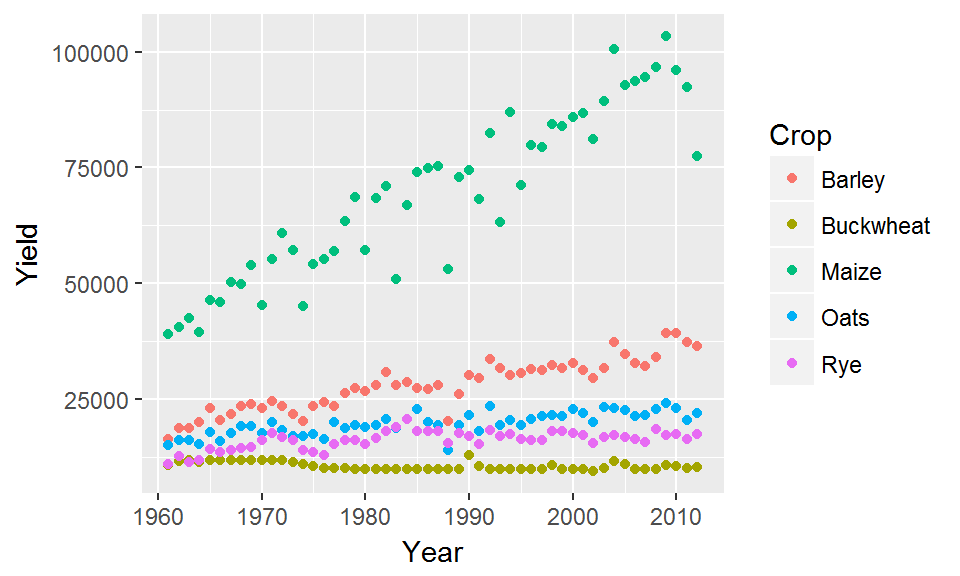
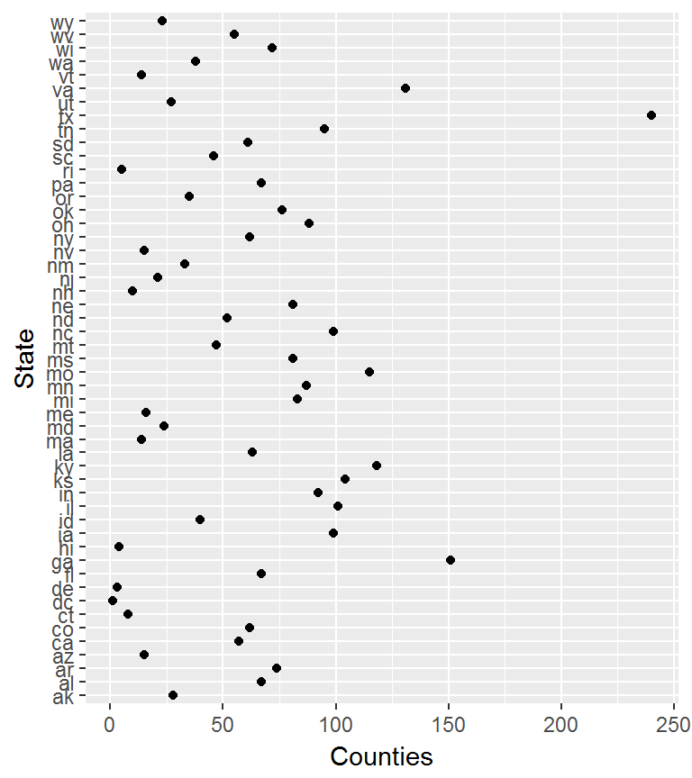

Week4: ggplot2 plotting environment
This tutorial makes use of the following R package(s): dplyr, tidyr, ggplot2, stringr
Data
Data used in this tutorial include grain harvest for north america and income/education census data for the US.
dat1 <- read.csv("http://mgimond.github.io/ES218/Data/FAO_grains_NA.csv", header=TRUE)
dat2 <- read.csv("http://mgimond.github.io/ES218/Data/Income_education.csv", header=TRUE)Dataset dat1
dat1 consists of grain yields by north american countries and by year. The dataset was downloaded from http://faostat3.fao.org/ in June of 2014.
A subset of dat1 will be used in this tutorial in both a wide form and a long form. The wide form will be called dat1w and will be a table of year vs. crop yields.
library(dplyr)
library(tidyr)
dat1w <- dat1 %>%
filter(Information == "Yield (Hg/Ha)",
Country =="United States of America",
Crop %in% c("Oats", "Maize", "Barley", "Buckwheat","Rye")) %>%
select(Year, Crop, Value) %>%
spread(key = Crop, value="Value")
head(dat1w) Year Barley Buckwheat Maize Oats Rye
1 1961 16488.52 10886.67 39183.63 15171.26 11121.79
2 1962 18839.00 11737.50 40620.80 16224.60 12892.77
3 1963 18808.27 11995.00 42595.55 16253.04 11524.11
4 1964 20208.88 11566.50 39498.36 15471.55 12026.24
5 1965 23070.58 11875.00 46492.14 18001.04 14192.91
6 1966 20581.66 11956.52 45891.88 16117.92 13670.75The long form version of the subset will be called dat1l and will be a long form representation of dat1w (yield by crop and year).
dat1l <- gather(dat1w, key = "Crop", value = "Yield", 2:6)
head(dat1l,10) Year Crop Yield
1 1961 Barley 16488.52
2 1962 Barley 18839.00
3 1963 Barley 18808.27
4 1964 Barley 20208.88
5 1965 Barley 23070.58
6 1966 Barley 20581.66
7 1967 Barley 21785.30
8 1968 Barley 23557.07
9 1969 Barley 24039.46
10 1970 Barley 23048.77Another subset will be used in this exercise and will consist of total yields for each year by crop and country.
dat1l2 <- dat1 %>%
filter(Information == "Yield (Hg/Ha)",
Crop %in% c("Oats", "Maize", "Barley", "Buckwheat","Rye")) %>%
select( Year, Crop, Country, Yield = Value) # Note that we are renaming the Value field
head(dat1l2,15) Year Crop Country Yield
1 2012 Barley Canada 38894.66
2 2012 Maize Canada 83611.49
3 2012 Oats Canada 24954.79
4 2012 Rye Canada 38056.86
5 2012 Barley United States of America 36533.24
6 2012 Buckwheat United States of America 10445.86
7 2012 Maize United States of America 77441.67
8 2012 Oats United States of America 21974.70
9 2012 Rye United States of America 17575.73
10 2011 Barley Canada 32796.43
11 2011 Maize Canada 88946.49
12 2011 Oats Canada 29109.36
13 2011 Rye Canada 24676.81
14 2011 Barley United States of America 37431.96
15 2011 Buckwheat United States of America 10299.05Dataset dat2
dat2 consists of county income and educational attainment for both the male and female population. A codebook available here provides descriptions for the different codes. We will remove the cases (rows) from dat2 for which values are missing (i.e. cases having a NA designation) since these rows will serve no purpose (such cases may be associated with counties having no year-round residents or a resident population too small for data dissemination).
dat2 <- na.omit(dat2)As with dat1, we will create a tidy version of dat2 for use with ggplot plotting routines.
The dat2 dataset has income data broken down by educational attainment and gender aggregated at the county level. It would therefore be convenient for subsequent plot operations if two variables, Gender and (educational) Level, were added to the long table version of dat2.

Census Table
We will first generate a lookup table, Edu.Gend, of variable elements that will match each census category (e.g. B20004001, B20004002, …) to its matching pair of Level and Gender types.
We will also create a State/Region lookup table, st.reg, that will store two variables: the two letter state abbreviation variable State and it matching region variable Region. R has a built-in vector called state.region that assigns a region to each state. However, you’ll note that this vector only has region names but makes no reference to states. It’s intended to be used with another built-in data vector called state.abb or state.name. We will combine state.abb with state.region to create st.reg. We will also need to convert the uppercase state abbreviations to lower case using tolower so that they match the dat2’s lowercase state abbreviations. Note that D.C. is not included in the built-in states dataset, so we will add this record the st.reg table and assign D.C. to the South region.
Finally, the two tables, Edu.gend and st.reg, will be joined to the long version of dat2 such that each observation will be assigned a Level, Gender and Region.
library(stringr)
# Create a variable/Level/Gender join table
Edu.Gend <- data.frame(
variable = paste("B200040", str_pad(1:18, width=2 , pad="0"),sep="" ),
Level = rep(c("All", "NoHS","HS","AD","BD","Grad"), times=3),
Gender = rep(c("All", "M","F"), each=6) )
# Create a region/state join table
st.reg <- data.frame(State = tolower(state.abb), Region = state.region)
st.reg <- rbind(st.reg , data.frame(State="dc", Region="South") )
# Start the piping operations
dat2b <- dat2 %>%
gather(key = "variable", value = "value", -1:-2) %>%
inner_join(Edu.Gend, by="variable" ) %>%
select(State, County, Level, Gender, value) %>%
mutate(Level = factor(Level,
levels = c("All","NoHS","HS", "AD", "BD", "Grad"))) %>%
inner_join(st.reg , by="State")
head(dat2b) State County Level Gender value Region
1 al Autauga All All 35881 South
2 al Baldwin All All 31439 South
3 al Barbour All All 25201 South
4 al Bibb All All 29016 South
5 al Blount All All 32035 South
6 al Bullock All All 26408 Southtail(dat2b) State County Level Gender value Region
55201 wy Sublette Grad F 59683 West
55202 wy Sweetwater Grad F 63681 West
55203 wy Teton Grad F 48357 West
55204 wy Uinta Grad F 52321 West
55205 wy Washakie Grad F 50341 West
55206 wy Weston Grad F 56765 WestNote that we have eliminated references to variable names such as “B20004001” from dat2b making it easier to interpret the variable names/values.
In dat2b the gender values are lumped under the variable called Gender. We may wish to have male and female incomes assigned their own columns so we will need to widen dat2b so that each gender value is given its own column. We will use the spread function from the tidyr package to create a new data frame called dat2.gender.
dat2c <- spread(dat2b, key = Gender, value = value )The ggplot2 package
The ggplot2 package is designed around the idea that scientific graphics can be decomposed into a formal system of rules–grammatical rules. The ggplot2 learning curve is the steepest of all graphing environments encountered thus far, but once mastered it affords the greatest control over graphical design. For an up-to-date list of ggplot2 functions, you may want to refer to ggplot2’s website.
A plot in ggplot2 consists of different layering components, with the three primary components being:
- The dataset that houses the data to be plotted.
- The aesthetics which describe how data are to be mapped to the geometric elements
- The geometric elements to use in the plot (i.e. points, lines, rectangles, etc…)
Additional (optional) layering components include:
- Statistical elements such as smoothing, binning or transforming the variable
- Facets for conditional or trellis plots
- Coordinate systems for defining the plots shape (i.e. cartesian, polar, spatial map projections, etc…)
To access ggplot2 functions, you will need to load its library:
library(ggplot2)From a grammatical perspective, a scientific graph is the conversion of data to aesthetic attributes and geometric objects. This is an important concept to grasp since it underlies the construction of all graphics in ggplot2.
For example, if we want to generate a point plot of crop yield as a function of year using the dat1l data frame, we type:
ggplot(dat1l , aes(x=Year, y=Yield)) + geom_point()
where the function, ggplot(), is passed the data frame name whose content will be mapped; the aes() function is given data-to-geometry mapping instructions (Year is mapped to the x-axis and Yield is mapped to the y-axis); and geom_line() is the geometry type.

alt text
If we wanted to include a third variable, crop type, to the map, we would need to map its aesthetics: here we’ll map Crop to the color element of the geom.
ggplot(dat1l , aes(x=Year, y=Yield, color=Crop)) + geom_point()
The parameter color acts as a grouping parameter whereby the groups are assigned unique colors.

alt text
If we want to plot lines instead of points, simply substitute the geometry type with the geom_line() geometry.
ggplot(dat1l , aes(x=Year, y=Yield, color=Crop)) + geom_line()
Note that the aesthetics are still mapped in the same way with Year mapped to the x coordinate, Yield mapped to the y coordinate and Crop mapped to the geom’s color.
Note that the parameters x= and y= can be omitted from the syntax reducing the line of code to:
ggplot(dat1l , aes(Year, Yield, color=Crop)) + geom_line()Geometries
Examples of a few available geometric elements follow.
geom_line
geom_line generates line geometries. We’ll use data from dat1w to generate a simple plot of oat yield as a function of year.
ggplot(dat1w, aes(x=Year, y=Oats)) + geom_line() 
Parameters such as color and linetype can be passed directly to the geom_line() function:
ggplot(dat1w, aes(x=Year, y=Oats)) + geom_line(linetype=2, colour = "blue", size=0.4) 
Note the difference in how colour= is implemented here. It’s no longer mapping a variable’s levels to a range of colors as when it’s called inside of the aes() function, instead, it’s setting the line color to blue.
geom_point
This generates point geometries. This is often used in generating scatterplots. For example, to plot male income (variable B20004013) vs female income (variable B20004007), type:
ggplot(dat2, aes(x=B20004013, y=B20004007)) + geom_point(alpha=0.3) 
We modify the point’s transparency by passing the alpha=0.3 parameter to the geom_point function. Other parameters that can be passed to point geoms include colour, pch (point symbol type) and cex (point size as a fraction).
ggplot(dat2, aes(x=B20004013, y=B20004007)) + geom_point(colour="red", pch=3 , alpha=0.3, cex=0.6) 
geom_boxplot
In the following example, a boxplot of Yield is generated for each crop type.
ggplot(dat1l, aes(x=Crop, y=Yield)) + geom_boxplot(fill="bisque") 
If we want to generate a single boxplot (for example for all yields irrespective of crop type) we need to pass a dummy variable to x=:
ggplot(dat1l, aes(x="", y=Yield)) + geom_boxplot(fill="bisque") + xlab("All crops")
geom_violin
A violin plot is a symmetrical version of a density plot which provides greater detail of a sample’s distribution than a boxplot.
ggplot(dat1l, aes(x="", y=Yield)) + geom_violin(fill="bisque") 
geom_histogram
Histograms can be plotted for single variables only (unless faceting is used) as can be noted by the absence of a y= parameter in aes():
ggplot(dat1w, aes(x=Oats)) + geom_histogram(fill="grey50") 
The bin widths can be specified in terms of the value’s units. In our example, the unit is yield of oats (in Hg/Ha). So if we want to generate bin widths that cover 1000 Hg/Ha, we can type,
ggplot(dat1w, aes(x=Oats)) + geom_histogram(fill="grey50", binwidth = 1000) 
geom_bar
Bar plots are uses to summaries the counts of a categorical value. For example, to plot the number of counties in each state (note that each record in dat2 is assigned a county):
ggplot(dat2, aes(State)) + geom_bar()
To arrange the bars in ascending order we need to rearrange the State factor level order based on total count. We won’t be able to use the reorder function since we do not have a value field to summarize. Instead, we’ll make use of the table function to enumerate each instance of a record associated with each state, sort that vector, then extract the sorted state names. We’ll then create a copy of the State factor object to reflect the new level order.
new.lev.ord <- names( sort(table(dat2$State)) )
dat2$State.ord <- factor(dat2$State, levels = new.lev.ord)Now let’s recreate the bar plot with the new factor level order.
ggplot(dat2, aes(State.ord)) + geom_bar()
dot plot
The dot plot is an alternative way to visualize counts as a function of a categorical variable. We’ll make use of the geom_point function but we will need to summarize the counts across each state first; unlike geom_bar which will summarize the counts across each factor level,geom_point must be passed a single value for each state.
dat2.ct <- dat2 %>% group_by(State) %>%
summarize(Counties = n())
head(dat2.ct)# A tibble: 6 × 2
State Counties
<fctr> <int>
1 ak 28
2 al 67
3 ar 74
4 az 15
5 ca 57
6 co 62Instead of mapping State to the x-axis, we’ll map it to the y-axis.
ggplot(dat2.ct , aes(x=Counties, y=State)) + geom_point()
Dot plot graphics benefit from sorting–more so then bar plots. But instead of computing a new level order outside of the plotting function, we will make use of the reorder function inside of the aes function.
ggplot(dat2.ct , aes(x=Counties, y=reorder(State, Counties))) + geom_point()
Combining geometries
Geometries can be layered. For example, to overlay a linear regression line to the data we can add the geom_smooth layer:
ggplot(dat2, aes(x=B20004013, y=B20004007)) + geom_point(alpha=0.3) +
geom_smooth(method = "lm")
The geom_smooth can be used to fit other lines such as a loess:
ggplot(dat2, aes(x=B20004013, y=B20004007)) + geom_point(alpha=0.3) +
geom_smooth(method = "loess")
The confidence interval can be removed from the smooth geometry by specifying se=FALSE.
ggplot(dat2, aes(x=B20004013, y=B20004007)) + geom_point(alpha=0.3) +
geom_smooth(method = "loess", se=FALSE)
Tweaking a ggplot2 graph
Title
You can add a plot title using the ggtile function.
ggplot(dat2, aes(State)) + geom_bar() +ggtitle("Number of counties by state")
Axes labels
Axes labels can be explicitly defined using the xlab() and ylab() functions.
ggplot(dat2, aes(x=B20004013, y=B20004007)) + geom_point(alpha=0.3) +
geom_smooth(method = "lm") +
xlab("Female income ($)") + ylab("Male income ($)")
To remove axis labels, simply pass NULL to the functions as in xlab(NULL) and ylab(NULL).
Axes limits
The axis range can be set using xlim() and ylim().
ggplot(dat2, aes(x=B20004013, y=B20004007)) + geom_point(alpha=0.3) +
geom_smooth(method = "lm") +
xlab("Female income ($)") + ylab("Male income ($)") +
xlim( c(10000, 75000)) + ylim( c(10000, 75000)) 
Aspect ratio
You can impose an aspect ratio to your plot using the coord_equal() function. For example, to set the axes units equal (in length) to one another set ratio=1:
ggplot(dat2, aes(x=B20004013, y=B20004007)) + geom_point(alpha=0.3) +
geom_smooth(method = "lm") +
xlab("Female income ($)") + ylab("Male income ($)") +
coord_equal(ratio=1)
Colors
You can customize geom colors using one of two sets of color schemes: one for continuous values, the other for categorical (discrete) values.
| Continuous | Categorical |
|---|---|
|
|
A few examples follow.
Continuous color schemes
The following chunk applies a green to red color gradient fill to each bar. Note that we are using the summarized count table (and not the original dat2 table). When plotting bars from counts already tabulated specify stat="identity" in the geom_bar function.
ggplot(dat2.ct, aes(x=reorder(State, Counties), y=Counties, fill=Counties)) +
geom_bar(stat="identity") +
scale_fill_gradient(low = "green", high = "red")
The following chunk applies a divergent color scheme while allowing one to specify the central value of this scheme. Note that the colors are symmetrical about the midpoint which may result in only a partial range of the full possible gradient of colors.
ggplot(dat2.ct, aes(x=reorder(State, Counties), y=Counties, fill=Counties)) +
geom_bar(stat="identity") +
scale_fill_gradient2(low = "blue", mid = "white", high = "red", midpoint = 61)
In the last two chunk, we filled the bars with colors (note the use of functions with the string _fill_). When assigning color to point or line symbols, use the function with the _colour_ string. For example:
ggplot(dat2.ct , aes(x=Counties, y=reorder(State, Counties), col=Counties)) +
geom_point() +
scale_colour_gradient2(low = "darkblue", mid = "white", high = "darkred", midpoint = 61)
Categorical color schemes
In the following chunk, we assign colors manually to each level in the variable Yield. The order of the color names mirror the order of the variable levels.
ggplot(dat1l, aes(Year, Yield, col=Crop)) +
geom_line() +
scale_colour_manual(values = c("red", "orange", "green", "blue", "yellow"))
The following chunk applies a predefined discrete color scheme named Dark2 to each level.
ggplot(dat1l, aes(Year, Yield, col=Crop)) +
geom_line() +
scale_colour_brewer(palette = "Dark2")
To see a list of predefined scale_colour_brewer colors, type ?scale_colour_brewer at the console.
Faceting
Faceting by categorical variable
Faceting (or conditioning on a variable) can be implemented in ggplot2 using the facet_wrap() function.
ggplot(dat1l2, aes(x=Year, y=Yield, color=Crop)) + geom_line() +
facet_wrap( ~ Country, nrow=1)
The parameter ~ Country tells ggplot to condition the plots on country. If we wanted the plots to be stacked, we would set nrow to 2.
We can also condition the plots on two variables such as crop and Country.
ggplot(dat1l2, aes(x=Year, y=Yield)) + geom_line() +
facet_wrap(Crop ~ Country, nrow=1)
This creates as many plots as there are unique combinations of variables Crop and Country. But such plots are usually best represented in a grid structure where one variable is spread along one axis and the other variable is spread along another axis of the plot layout. This can be accomplished using the facet_grid function:
ggplot(dat1l2, aes(x=Year, y=Yield)) + geom_line() +
facet_grid( Crop ~ Country)
Faceting by continuous variable
In the above example, we are faceting the plots based on a categorical variable: Country and/or crop. But what if we want to facet the plots based on a continuous variable? For example, we might be interested in comparing male and female incomes across different female income ranges. This requires that a new categorical field (a factor) be created assigning to each case (row) an income group. We can use the cut() function to accomplish this task (we’ll also omit all values greater than 100,000):
dat2c$incrng <- cut(dat2c$F , breaks = c(0, 25000, 50000, 75000, 100000) )
head(dat2c) State County Level Region All F M incrng
1 ak Aleutians East Borough All West 21953 20164 22940 (0,2.5e+04]
2 ak Aleutians East Borough NoHS West 21953 19250 22885 (0,2.5e+04]
3 ak Aleutians East Borough HS West 20770 19671 21192 (0,2.5e+04]
4 ak Aleutians East Borough AD West 26383 26750 26352 (2.5e+04,5e+04]
5 ak Aleutians East Borough BD West 22431 19592 27875 (0,2.5e+04]
6 ak Aleutians East Borough Grad West 74000 74000 71250 (5e+04,7.5e+04]In this chunk of code, we create a new variable, incrng, which is assigned an income category group depending on which range dat2c$F (female income) falls into. The income interval breaks are defined in breaks=. In the output, you will note that the factor incrng defines a range of incomes (e.g. (0 , 2.5e+04]) where the parenthesis ( indicates that the left-most value is exclusive and the bracket ] indicates that the right-most value is inclusive.
However, because we did not create categories that covered all income values in dat2c$F we ended up with a few NA’s in the incrng column:
summary(dat2c$incrng) (0,2.5e+04] (2.5e+04,5e+04] (5e+04,7.5e+04] (7.5e+04,1e+05] NA's
9419 7520 1425 33 5 We will remove all rows associated with missing incrng values:
dat2c <- na.omit(dat2c)
summary(dat2c$incrng) (0,2.5e+04] (2.5e+04,5e+04] (5e+04,7.5e+04] (7.5e+04,1e+05]
9419 7520 1425 33 We can list all unique levels in our newly created factor using the levels() function.
levels(dat2c$incrng) [1] "(0,2.5e+04]" "(2.5e+04,5e+04]" "(5e+04,7.5e+04]" "(7.5e+04,1e+05]"The intervals are not meaningful displayed as is (particularly when scientific notation is adopted). So we will assign more meaningful names to our factor levels as follows:
levels(dat2c$incrng) <- c("Under 25k", "25k-50k", "50k-75k", "75k-100k")
head(dat2c) State County Level Region All F M incrng
1 ak Aleutians East Borough All West 21953 20164 22940 Under 25k
2 ak Aleutians East Borough NoHS West 21953 19250 22885 Under 25k
3 ak Aleutians East Borough HS West 20770 19671 21192 Under 25k
4 ak Aleutians East Borough AD West 26383 26750 26352 25k-50k
5 ak Aleutians East Borough BD West 22431 19592 27875 Under 25k
6 ak Aleutians East Borough Grad West 74000 74000 71250 50k-75kNote that the order in which the names are passed must match that of the original breaks.
Now we can facet male vs. female scatter plots by income ranges. We will also throw in a best fit line to the plots.
ggplot(dat2c, aes(x=F, y=M)) + geom_point(alpha=0.2, pch=20) +
geom_smooth(method = "lm", col="red") +
facet_grid( . ~ incrng) 
One reason we would want to explore our data across different ranges of value is to assess the consistency in relationship between variables. In our example, this plot helps assess whether the relationship between male and female income is consistent across income groups.
To highlight differences in income, we will make a few changes to the plots. First, we will reduce the y-axis range to $0-$150k (this will remove a few points from the data); we will force the x-axis and y-axis units to match so that a unit of $50k on the x-axis has the same length as that on the y-axis; and we will add a 45° line (geom_abline(c(0,1)) where 0 is the intercept and 1 is the slope) to help visualize the discrepancy (if a point lies above the 45° line, then male’s income is greater, if the point lies below, then female’s income is greater); we will also reduce the number of tics and assign shorthand notation to income values (such as “50k” instead of “50000”). All this can be accomplished by adding the scale_x_continuous() function to the stack of ggplot elements.
ggplot(dat2c, aes(x=F, y=M)) + geom_point(alpha=0.2, pch=20, cex=0.8) +
ylim( c(0,150000)) +
geom_smooth(method = "lm", col="red") +
facet_grid( . ~ incrng) +
coord_equal(ratio=1) +
geom_abline(intercept = 0, slope = 1, col="grey50") +
scale_x_continuous(breaks=c(50000,100000), labels=c("50k", "100k"))
Note the change in regression slope for the last facet. The geom_smooth operation is only applied to the data limited to the axis range defined by ylim.
Now let’s look at the same data but this time conditioned on educational attainment.
# Plot M vs F by educational attainment except for Level == All
ggplot(dat2c, aes(x=F, y=M)) + geom_point(alpha=0.2, pch=20, cex=0.8) +
ylim( c(0,150000)) +
geom_smooth(method = "lm", col="red") +
facet_grid( . ~ Level) +
coord_equal(ratio=1) +
geom_abline(intercept = 0, slope = 1, col="grey50") +
scale_x_continuous(breaks=c(50000,100000), labels=c("50k", "100k"))
We can also condition the plots on two variables: educational attainment and region.
ggplot(dat2c, aes(x=F, y=M)) + geom_point(alpha=0.2, pch=20, cex=0.8) +
ylim( c(0,150000)) +
geom_smooth(method = "lm", col="red") +
facet_grid( Region ~ Level) +
coord_equal(ratio=1) +
geom_abline(intercept = 0, slope = 1, col="grey50") +
scale_x_continuous(breaks=c(50000,100000), labels=c("50k", "100k"))
 Manny Gimond (2017)
Manny Gimond (2017)